Carbohydrate metabolism
- Essentials
- Introduction
- Digestion & absorption
- Main pathways
- Glycolysis
- Fates of pyruvate
- Krebs cycle
- ATP yield
- Respiratory chain
- Other hexoses
- Pentose phosphate
- Gluconeogenesis
- Glycogen
- Exam traps
- Self-check
- Glycolysis: cytoplasm, no O₂ needed, 10 reactions, glucose → 2 pyruvate. Only 3 irreversible steps: 1 hexokinase, 3 PFK-1 (main regulator), 10 pyruvate kinase. ATP is spent at 1 and 3, made at 7 and 10. Net 2 ATP (anaerobic) or 8 ATP (aerobic, + 2 NADH × 3).
- PFK-1: activated by AMP, ADP, fructose-2,6-bisphosphate, F6P; inhibited by ATP, citrate.
- Anaerobic: pyruvate → lactate (lactate dehydrogenase; muscle, red cells) or ethanol (yeasts) — this regenerates NAD⁺ so glycolysis can go on. Aerobic: pyruvate → acetyl-CoA by PDH (mitochondrion, irreversible, 1 NADH).
- Krebs cycle: mitochondrion, amphibolic, 8 reactions; per acetyl-CoA: 3 NADH + 1 FADH₂ + 1 GTP = 12 ATP, 2 CO₂ (released at isocitrate DH and α-ketoglutarate DH). Succinate DH is the only membrane enzyme. 1 pyruvate fully oxidised = 15 ATP; 1 glucose = 38 (or 36).
- PPP: cytosol, all cells, no ATP; makes NADPH and ribose-5-P. Key enzyme G6PD → deficiency = hemolysis (favism). Back to glycolysis as F6P and G3P.
- Gluconeogenesis: liver 90% / kidney + gut 10%, not muscle or brain. Precursors: lactate, pyruvate, alanine, glycerol, glucogenic AAs, propionate — never acetyl-CoA / fatty acids. Bypasses: pyruvate carboxylase (mitochondrial, biotin) + PEPCK, F1,6-BPase, glucose-6-phosphatase. Costs 6 ATP.
- Cori cycle = lactate (muscle) → glucose (liver). Felig cycle = alanine (muscle) → glucose (liver).
- Glycogen: synthesis in the cytosol from G6P, key enzyme glycogen synthase, needs ATP + UTP. Liver glycogen = "public" (has glucose-6-phosphatase); muscle glycogen = "private" (no glucose-6-phosphatase).
I. Introduction p. 3
After digestion and absorption, nutrients go through intermediate metabolism: all the intracellular enzymatic reactions that convert, connect and regulate molecules to keep the cell's energy balance.
| Type of pathway | What it does |
|---|---|
| Anabolic | Synthesis: builds complex molecules (glycogen, lipids, proteins) from simple precursors. Needs energy (ATP or reduced coenzymes). |
| Catabolic | Oxidative breakdown of energy substrates (carbohydrates, lipids, amino acids) → releases energy as ATP, NADH,H⁺ or FADH₂, which then feed the respiratory chain. |
| Amphibolic | Dual-purpose, between anabolism and catabolism. Main example: the Krebs cycle (the main metabolic crossroads). |
II. Digestion and absorption of dietary carbohydrates p. 5–7
Dietary carbohydrates: polysaccharides (starch, glycogen), disaccharides (lactose, sucrose) and, a little, monosaccharides (glucose, fructose). Digestion begins in the mouth and is completed mainly in the small intestine.
| Site | Enzyme | Result |
|---|---|---|
| Mouth | Salivary α-amylase (ptyalin) — randomly cleaves α-1,4 bonds of starch | α-limit dextrins (~8 glucoses with one or more α-1,6 bonds), maltotriose, maltose. Carbohydrates are the only macronutrients whose digestion starts significantly in the mouth. |
| Stomach | — (salivary amylase is inactivated by the low pH) | No digestion of carbohydrates. |
| Small intestine (lumen) | Chyme neutralised by pancreatic bicarbonate; pancreatic α-amylase (α-1,4 bonds) | Disaccharides (maltose, isomaltose) and short oligosaccharides. |
| Brush border, upper jejunum | Oligosaccharidases (glucoamylase) and disaccharidases (maltase, sucrase, lactase) | Monosaccharides. Lactase (β-galactosidase) is slow → lactose digestion is a rate-limiting step; sucrase is efficient. |
Dietary fibre = cellulose, hemicellulose, pectins, lignin and gums: not digested in humans; important for intestinal transit and preventing constipation.
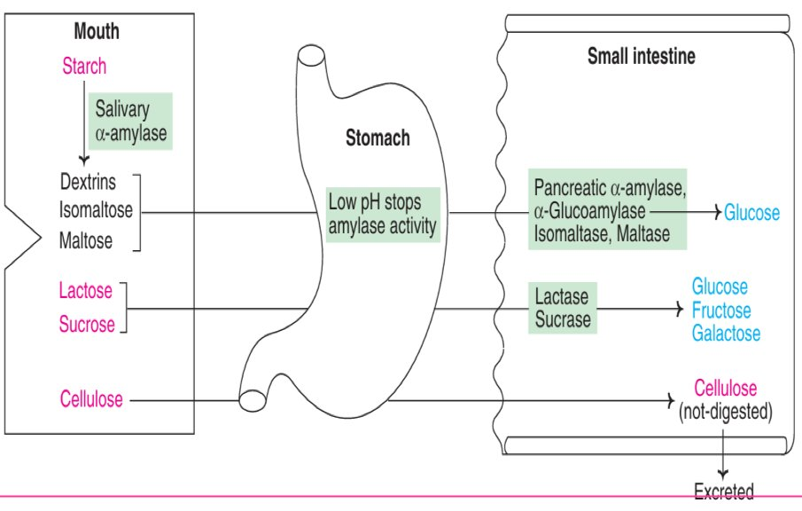
Absorption — only as monosaccharides
The enterocyte membrane is lipophilic, so monosaccharides need transport proteins:
| Transporter | Type of transport | Where / what |
|---|---|---|
| SGLT1 (sodium–glucose linked) | Secondary active, driven by the Na⁺ gradient kept by the Na⁺/K⁺-ATPase | Apical side: glucose + galactose + Na⁺, same direction |
| GLUT5 | Facilitated diffusion (passive) | Apical side: fructose only |
| GLUT2 | Facilitated diffusion (passive) | Basolateral side: glucose, fructose, galactose → blood → portal vein → liver |
| GLUT4 | — | Skeletal muscle and adipose tissue; insulin increases its number and activity. Type 2 diabetes: insulin resistance in these tissues (less GLUT4). |
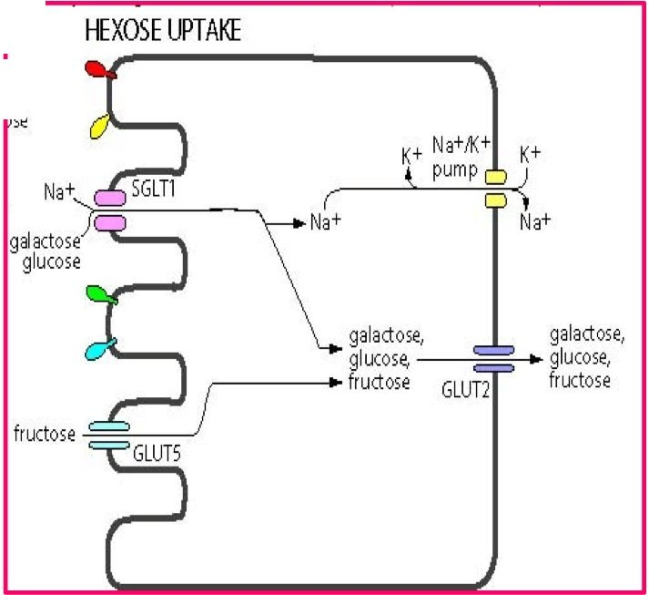
III. Main pathways and glucose homeostasis p. 8–10 2025-26
In the liver, fructose and galactose are converted into glucose, the body's main energy substrate. Hepatic glucose can:
- be oxidised to pyruvate (glycolysis) then enter the Krebs cycle → ATP;
- be stored as glycogen (glycogenesis);
- when glycogen stores are full, become fatty acids (lipogenesis);
- 5–10% goes through the pentose phosphate pathway → NADPH (needed for lipogenesis).
Glucose not taken by the liver leaves by the hepatic veins: brain ~50%, skeletal muscle ~30%, other tissues. Between meals / fasting, glucose comes from glycogenolysis or from gluconeogenesis (from amino acids).
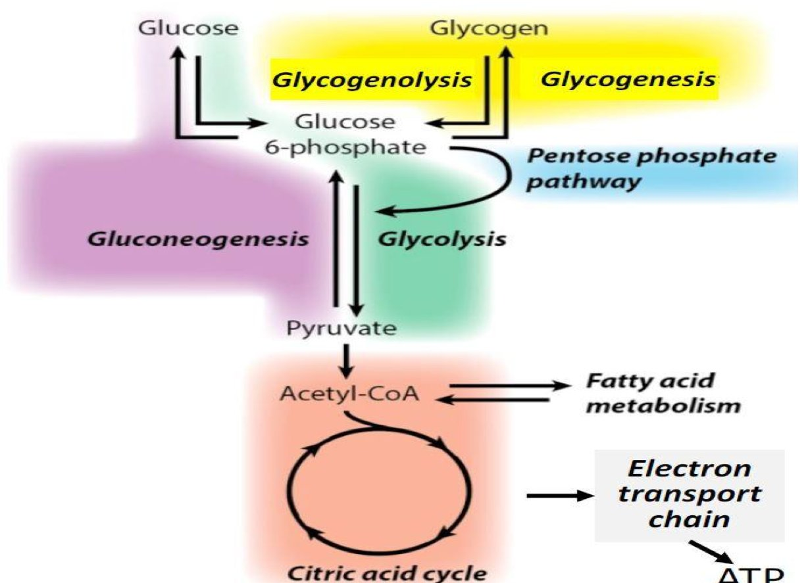
IV. Glycolysis p. 12–19 2022-23 · 2023-24 · 2024-25 · 2025-26
- Also called the Embden-Meyerhof pathway. In the cytoplasm; does not need oxygen; in both aerobic and anaerobic organisms.
- Glucose → 2 pyruvate + ATP + NADH + water.
- 10 reactions, all reversible except 3 key regulatory steps. Two phases: preparatory (reactions 1–5) and payoff (6–10).
| # | Reaction | Enzyme | Note |
|---|---|---|---|
| 1 | Glucose → glucose-6-P | Hexokinase (glucokinase in liver) | −1 ATP · irreversible · 1st priming |
| 2 | G6P → fructose-6-P | Phosphohexose isomerase (G6P isomerase) | reversible |
| 3 | F6P → fructose-1,6-bisP | Phosphofructokinase-1 (PFK-1) | −1 ATP · irreversible · main control point |
| 4 | F1,6-bisP → G3P + DHAP | Aldolase | cuts the 6C sugar into two 3C |
| 5 | DHAP ⇄ glyceraldehyde-3-P | Triose phosphate isomerase | → 2 G3P from here on |
| 6 | G3P → 1,3-bisphosphoglycerate | Glyceraldehyde-3-P dehydrogenase | oxidation + phosphorylation: 2 NADH |
| 7 | 1,3-BPG → 3-phosphoglycerate | Phosphoglycerate kinase | +2 ATP (substrate-level) |
| 8 | 3-PG → 2-phosphoglycerate | Phosphoglycerate mutase | reversible |
| 9 | 2-PG → phosphoenolpyruvate | Enolase | releases H₂O |
| 10 | PEP → pyruvate | Pyruvate kinase | +2 ATP (substrate-level) · irreversible |
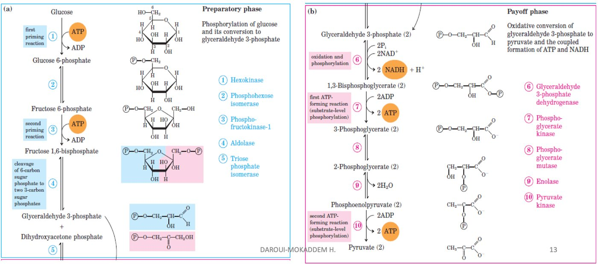
Why the intermediates are phosphorylated — 3 roles of the phosphate p. 14
- Gives a negative charge at pH 7 → the intermediates cannot leave the cell.
- Energy conservation → allows the formation of ATP.
- Binding/recognition → helps form enzyme–substrate complexes.
Energy balance p. 15–17
| Condition | Count | Net |
|---|---|---|
| Anaerobic (up to pyruvate) | −2 ATP (steps 1, 3) + 4 ATP (steps 7, 10) | 2 ATP |
| Aerobic | 2 ATP + 2 NADH × 3 ATP in the respiratory chain (6 ATP) | 8 ATP |
- Aerobic glycolysis: 2 ATP, 2 NADH, 2 pyruvate → pyruvate goes to the mitochondrion → acetyl-CoA → Krebs → complete oxidation to CO₂ + H₂O.
- Anaerobic glycolysis: same 2 ATP, 2 NADH, 2 pyruvate, but NADH is reoxidised by turning pyruvate into lactate (cells without mitochondria such as red blood cells; hypoxic tissue such as rapidly contracting muscle) or ethanol (yeasts, some microorganisms).
Regulation p. 18–19
Hormonal: after a meal, insulin increases hepatic glucokinase, PFK-1 and pyruvate kinase (gene transcription ↑) → more glycolysis. During fasting, glucagon lowers that transcription → glycolysis inhibited, glucose kept for the brain and kidneys.
Allosteric: the rate depends on glucose availability and on the 3 rate-limiting steps (1, 3, 10).
| Enzyme | Activators | Inhibitors |
|---|---|---|
| Hexokinase (step 1, slightly limiting) | — | its product glucose-6-P |
| PFK-1 (step 3, most limiting, commits glucose to glycolysis) | AMP, ADP, fructose-2,6-bisphosphate, fructose-6-P | ATP, citrate |
| Pyruvate kinase (step 10) | — | ATP |
Clinical aspects of glycolysis p. 29
| Situation | Description | Consequences |
|---|---|---|
| Glycolysis-dependent tissues | Red blood cells (no mitochondria), brain, muscle in anaerobiosis | Muscle fatigue, sensitivity to hypoglycemia, hemolysis if glycolytic enzymes are defective |
| Cancer (Warburg effect) | More glycolysis even with oxygen | High glucose uptake → basis of PET imaging with ¹⁸F-FDG |
| Lactic acidosis | Too much lactate made or poorly cleared | ↓ blood pH, respiratory distress, emergency |
| Enzyme deficiencies | Pyruvate kinase, PFK (Tarui disease), hexokinase | Hemolytic anemia, exercise intolerance, myoglobinuria |
| Intense exercise | Anaerobic glycolysis → high lactate | Cramps, ↓ pH, fatigue |
| Hypoglycemia | Not enough glucose for the brain | Confusion, seizures, coma |
| Diabetes mellitus | Chronic hyperglycemia | Vascular complications, oxidative stress |
V. Fates of pyruvate p. 20–22 2022-23 · 2023-24 · 2024-25 · 2025-26
Depends on the organism and the metabolic conditions (O₂ or not).
| Pathway | Condition / where | Enzyme(s) | Product |
|---|---|---|---|
| Lactic fermentation | Anaerobic: intensely contracting muscle, red blood cells, some microorganisms | Lactate dehydrogenase (pyruvate accepts the electrons of NADH directly) | 2 lactate + NAD⁺ |
| Alcoholic fermentation | Yeasts and other microorganisms | Pyruvate decarboxylase → acetaldehyde, then alcohol dehydrogenase | 2 ethanol + 2 CO₂ + NAD⁺ |
| Oxidative decarboxylation | Aerobic, mitochondrion | Pyruvate dehydrogenase (PDH) | 2 acetyl-CoA + 2 CO₂ → Krebs → 4 CO₂ + 4 H₂O |
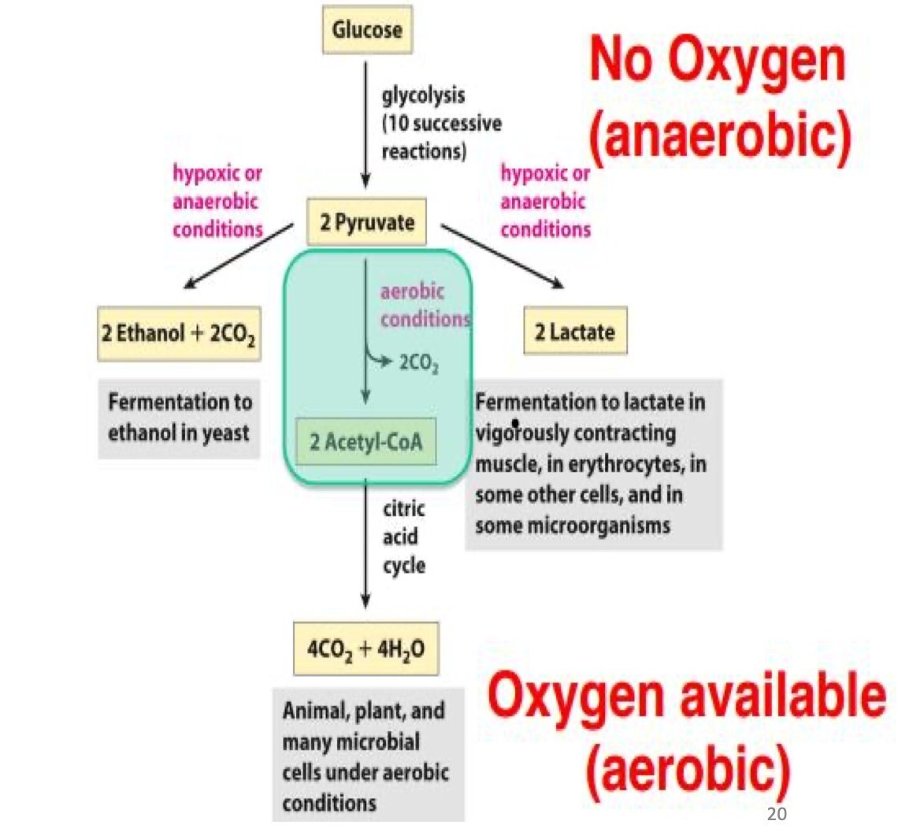
Pyruvate → acetyl-CoA (pyruvate dehydrogenase) p. 22
- In the mitochondrion; the key reaction between glycolysis and the Krebs cycle.
- 5 cofactors: thiamine pyrophosphate (TPP), lipoic acid (lipoamide), coenzyme A, FAD, NAD⁺ (E1-TPP, E2-lipoate, E3-FAD).
- Highly exergonic → irreversible. Forms a high-energy thioester bond in acetyl-CoA and 1 NADH = 3 ATP.
- Activators: ↑ pyruvate, NAD⁺, CoA-SH, AMP. Inhibitors: NADH, acetyl-CoA, ATP.
VI. Krebs cycle (citric acid / tricarboxylic acid cycle) p. 24–30 2022-23 · 2023-24 · 2024-25 · 2025-26
- Mitochondrion (eukaryotes). Amphibolic: catabolic (oxidises acetyl-CoA → energy) and anabolic (supplies intermediates for amino acids, purine bases, heme and glucose via gluconeogenesis).
- Each turn: acetyl-CoA (2C) + oxaloacetate (4C) → citrate (6C); 2 carbons leave as CO₂ → oxaloacetate is regenerated.
- 8 reactions, 7 soluble enzymes + 1 membrane enzyme (inner mitochondrial membrane): succinate dehydrogenase.
- Makes reduced coenzymes (3 NADH + 1 FADH₂) reoxidised by the respiratory chain → the cycle is coupled to the respiratory chain (needs O₂).
| # | Reaction | Enzyme | Produces |
|---|---|---|---|
| 1 | Oxaloacetate + acetyl-CoA → citrate (tricarboxylic) | Citrate synthase 🔑 | CoA-SH released |
| 2 | Citrate → cis-aconitate → isocitrate | Aconitase | — |
| 3 | Isocitrate → (oxalosuccinate) → α-ketoglutarate | Isocitrate dehydrogenase 🔑 | NADH + CO₂ |
| 4 | α-Ketoglutarate + CoA-SH → succinyl-CoA | α-Ketoglutarate dehydrogenase 🔑 | NADH + CO₂ |
| 5 | Succinyl-CoA → succinate | Succinyl-CoA synthetase | GTP (from GDP + Pi), CoA-SH |
| 6 | Succinate → fumarate | Succinate dehydrogenase (membrane) | FADH₂ |
| 7 | Fumarate + H₂O → malate | Fumarase | — |
| 8 | Malate → oxaloacetate | Malate dehydrogenase | NADH |
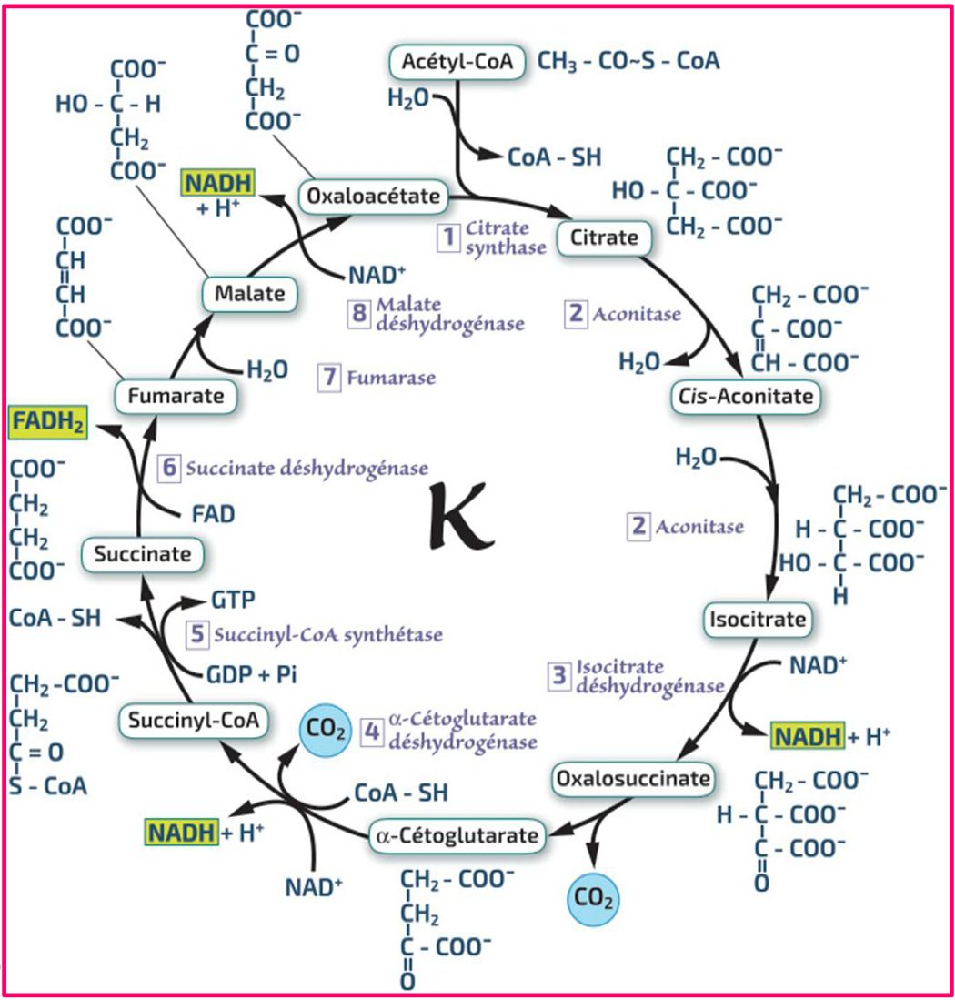
Energy balance p. 26
Regulation p. 27
- Depends on substrate availability (acetyl-CoA) and the cell's energy state.
- Inhibited by ATP, NADH, succinyl-CoA (high energy). Activated by ADP and Ca²⁺ (energy demand).
- Regulated enzymes: citrate synthase, isocitrate dehydrogenase, α-ketoglutarate dehydrogenase.
Clinical p. 30: mutations of Krebs enzymes → severe metabolic encephalopathies in infants, tumours and cancers in adults (impaired mitochondrial oxidation, accumulation of oncometabolites, epigenetic changes of DNA and histones).
VII. Total ATP yield from one glucose p. 28 2022-23 · 2023-24
NADH,H⁺ = 3 ATP, FADH₂ = 2 ATP in the respiratory chain. Everything is ×2 after aldolase.
| Reaction | ATP or coenzyme | ATP |
|---|---|---|
| Glucose → glucose-6-P | −1 ATP | −1 |
| Fructose-6-P → fructose-1,6-bisP | −1 ATP | −1 |
| 2 glyceraldehyde-3-P → 2 1,3-bisphosphoglycerate | 2 NADH | 6 |
| 2 1,3-BPG → 2 3-phosphoglycerate | 2 ATP | 2 |
| 2 PEP → 2 pyruvate | 2 ATP | 2 |
| Glycolysis (aerobic) | 8 | |
| 2 pyruvate → 2 acetyl-CoA | 2 NADH | 6 |
| 2 isocitrate → 2 α-ketoglutarate | 2 NADH | 6 |
| 2 α-ketoglutarate → 2 succinyl-CoA | 2 NADH | 6 |
| 2 succinyl-CoA → 2 succinate | 2 GTP | 2 |
| 2 succinate → 2 fumarate | 2 FADH₂ | 4 |
| 2 malate → 2 oxaloacetate | 2 NADH | 6 |
| Krebs (2 turns) | 24 | |
| Total per glucose | 38 | |
VIII. Respiratory chain and shuttle systems p. 32–37 2022-23 · 2025-26
In the inner mitochondrial membrane; 4 complexes:
| Complex | Name |
|---|---|
| I | NADH–coenzyme Q oxidoreductase |
| II | Succinate–coenzyme Q oxidoreductase |
| III | Coenzyme Q–cytochrome c oxidoreductase |
| IV | Cytochrome c oxidase |
- Mobile carriers: coenzyme Q (ubiquinone) and cytochrome c.
- Two coupled parts: electron transport (from NADH,H⁺ and FADH₂ to O₂ → H₂O = cellular respiration) and phosphorylation of ADP → ATP by ATP synthase. The coupling = oxidative phosphorylation.
- ≈ 3 ATP per NADH,H⁺, 2 ATP per FADH₂. ADP and Pi come from the cytosol.
- Controlled by [ADP]: when ADP rises, the chain speeds up quickly and strongly.
- Hypoxia → chain inhibited → Krebs slows, glycolysis goes on and lactate rises (NAD⁺ regenerated by fermentation).
- Clinical: defects hit high-energy organs (brain, muscle): fatigue, weakness, neurological disorders; mitochondrial myopathies.
Shuttles — moving cytosolic NADH into the mitochondrion p. 35–37
The NADH from glycolysis step 6 must be reoxidised or glycolysis stops (no NAD⁺). Problem: the mitochondrial membrane is impermeable to NADH. Solution: shuttles carry its electrons, not the NADH molecule.
| Shuttle | Tissues | Enters the chain as | Glucose yield |
|---|---|---|---|
| Glycerol phosphate (glycerol 3-P dehydrogenase, DHAP ⇄ glycerol 3-P, gives electrons to ubiquinone) | Muscle, brain | FADH₂ → 2 ATP | 36 ATP |
| Malate–aspartate (malate dehydrogenase, oxaloacetate ⇄ malate, aspartate/glutamate exchange) | Liver, kidney, heart | NADH → 3 ATP | 38 ATP |
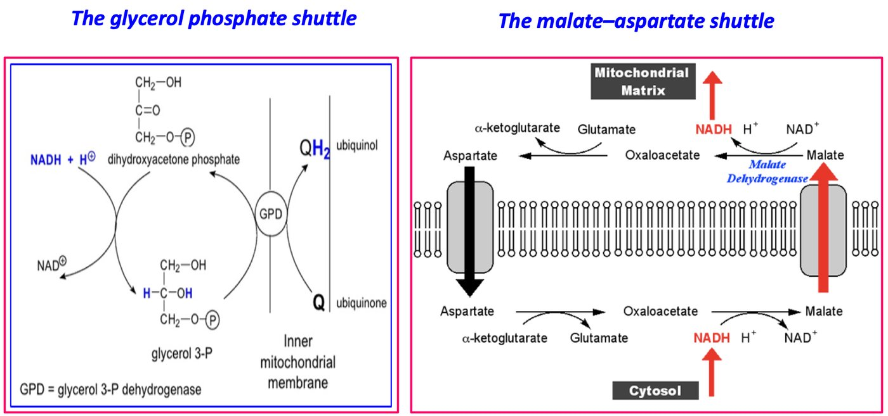
IX. Conversion of other hexoses into glucose p. 39–41 2025-26
Fructose, galactose and mannose are needed for glycoprotein synthesis and can be energy substrates. They are converted to glucose in the liver, entering glycolysis at an intermediate step.
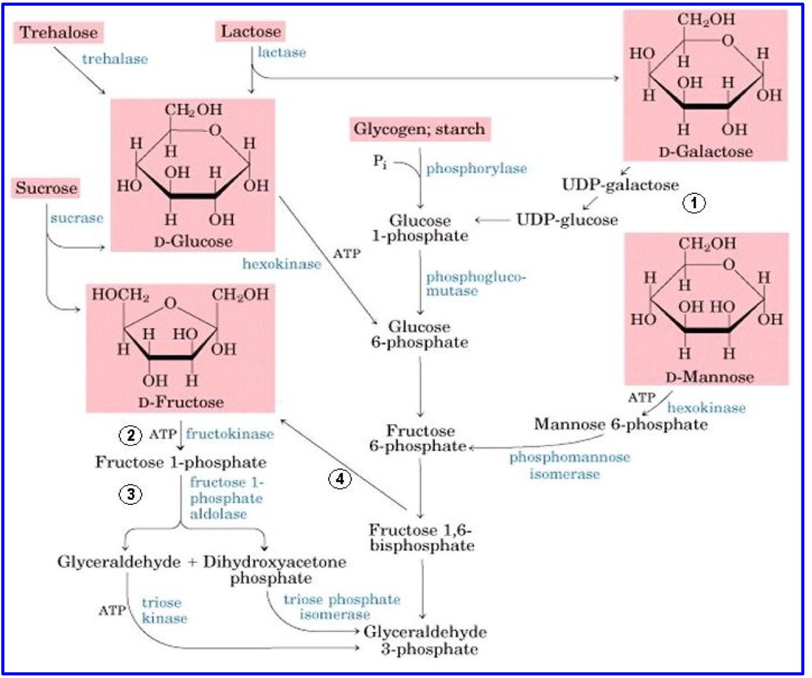
- Hepatic fructokinase deficiency → essential fructosuria: benign, no symptoms.
- Aldolase B deficiency → hereditary fructose intolerance: fructose-1-P accumulates → hypoglycemia, nausea, vomiting, liver damage.
- Galactose-1-phosphate uridyltransferase deficiency → congenital galactosemia, the most common inherited disorder of carbohydrate metabolism.
- Galactose accumulates in blood and tissues → severe hypoglycemia, early cataracts (aldose reductase reduces galactose to galactitol, which opacifies the lens), vomiting, diarrhea, mental retardation.
- Galactose-free diet prevents it; the body can make galactose from glucose if needed.
- The same aldose reductase turns glucose into sorbitol → cataracts in diabetics, can contribute to liver dysfunction.
X. Pentose phosphate pathway (PPP) p. 43–48 2022-23 · 2023-24 · 2024-25 · 2025-26
- In the cytosol; ubiquitous (all cells), activity depends on the need for ribose and NADPH.
- Produces no energy (no ATP). Starts from glucose-6-phosphate, ends with fructose-6-P and glyceraldehyde-3-P — all glycolysis intermediates.
- Products:
- NADPH,H⁺ — reducing power: detoxifies peroxides in red blood cells; synthesis of fatty acids, cholesterol, steroid hormones.
- Ribose-5-phosphate — nucleic acids (RNA, DNA) and nucleotides (ATP, CoA, NAD, FAD…).
- Erythrose-4-phosphate — aromatic amino acids (tyrosine, tryptophan, phenylalanine).
- NADP⁺ vs NAD⁺: chemically, only one extra phosphate on the 2′ position of the adenosine ribose. p. 44
| Phase | Steps | Notes |
|---|---|---|
| Oxidative | G6P → 6-phosphogluconolactone (G6PD, NADPH) → 6-phosphogluconate (lactonase) → ribulose-5-P (6-phosphogluconate dehydrogenase, NADPH + CO₂) | 2 NADPH, one decarboxylation. G6PD = key enzyme. |
| Non-oxidative | Ribulose-5-P → ribose-5-P (isomerase) and xylulose-5-P (epimerase); transketolase and transaldolase reshuffle → sedoheptulose-7-P, erythrose-4-P → G3P + F6P | Reversible, regulated by substrate availability. |
- Ribose-5-P → nucleic acids/nucleotides; in cells that need only NADPH, it is sent back to glycolysis.
- Erythrose-4-P → aromatic AAs, or with xylulose-5-P → G3P + F6P.
- G3P and F6P re-enter glycolysis: the connection points between the two pathways.
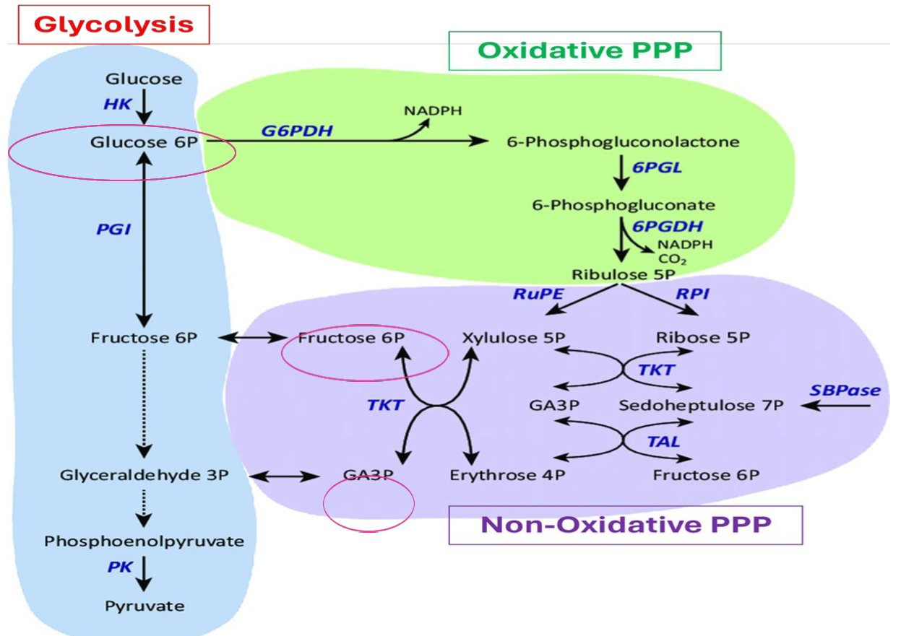
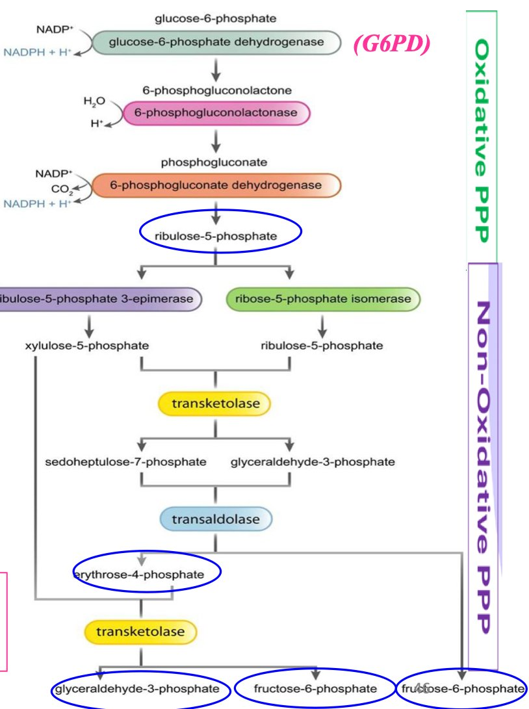
NADPH, glutathione and the red blood cell p. 47–48
Reduced glutathione (GSH) (glutamate–cysteine–glycine, with an SH group) protects red cells from oxidants such as H₂O₂; NADPH from the PPP recycles oxidised glutathione (GS–SG) back to GSH.
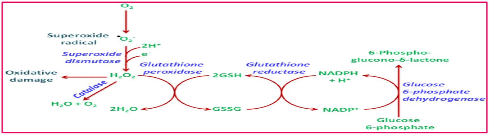
XI. Gluconeogenesis p. 50–63 2022-23 · 2023-24 · 2024-25 · 2025-26
- Feeds glucose-needing tissues (brain, red blood cells, rapidly contracting muscle); the liver uses glycogen (short-term) and gluconeogenesis.
- Where: liver 90%, kidneys + intestinal epithelium 10%. Not in muscle or brain.
- Same reactions in animals, plants, fungi and microorganisms.
Precursors and entry points p. 52–53
| Precursor | Origin | Enters at |
|---|---|---|
| Pyruvate, lactate (≈ 1/3) | Red blood cells, muscle | Pyruvate |
| Alanine (≈ 1/3) | Muscle | Pyruvate |
| Glycerol | Triglycerides (diet, adipose tissue, lipoproteins) | DHAP |
| Glucogenic amino acids | Dietary or tissue proteins | Pyruvate, or Krebs intermediates → PEP |
| Propionate | Odd-chain fatty acids | Succinyl-CoA → PEP |
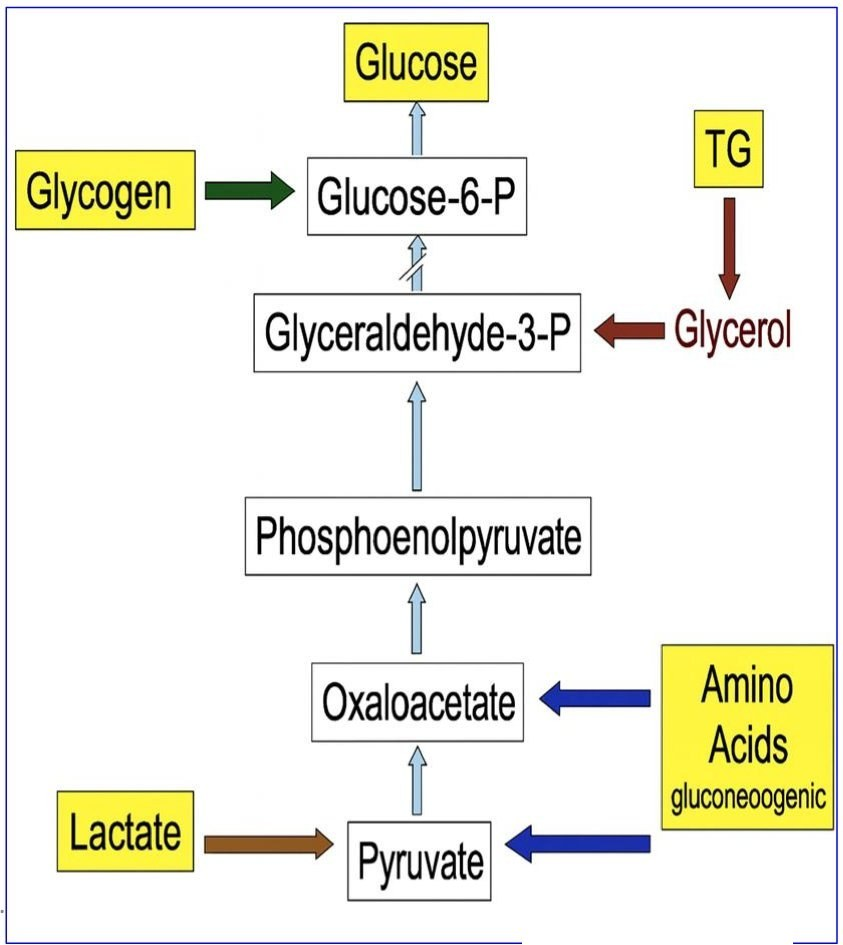
The 3 bypasses p. 54–55
Of the 10 reactions from pyruvate to glucose, 7 are glycolysis reversed (same cytosolic enzymes). The 3 irreversible glycolytic steps are bypassed by different enzymes (gluconeogenesis reactions 1, 8 and 10):
| Glycolysis step (irreversible) | Gluconeogenesis bypass | Details |
|---|---|---|
| 10 · Pyruvate kinase (PEP → pyruvate) | Pyruvate carboxylase + PEPCK | Pyruvate enters the mitochondrion → oxaloacetate by pyruvate carboxylase (strictly mitochondrial, coenzyme biotin, vitamin B8, 1 ATP). Oxaloacetate leaves as malate (malate dehydrogenase, malate–aspartate shuttle), then PEP carboxykinase (PEPCK): phosphorylative decarboxylation, 1 GTP. |
| 3 · PFK-1 | Fructose-1,6-bisphosphatase | F1,6-bisP → F6P |
| 1 · Hexokinase | Glucose-6-phosphatase | G6P → free glucose. Liver-specific (absent in muscle). |
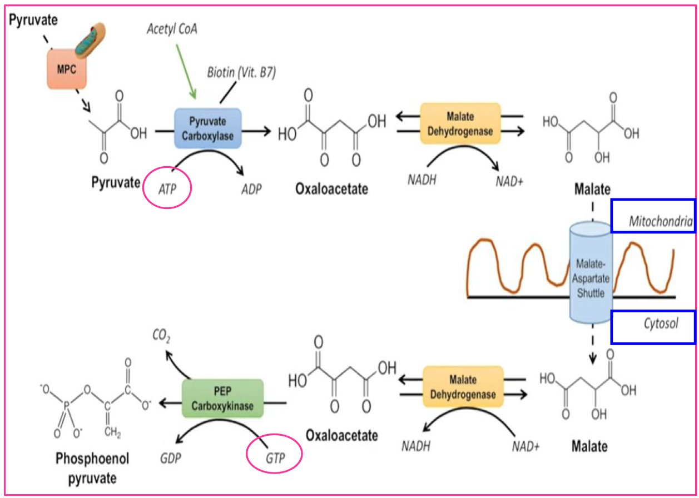
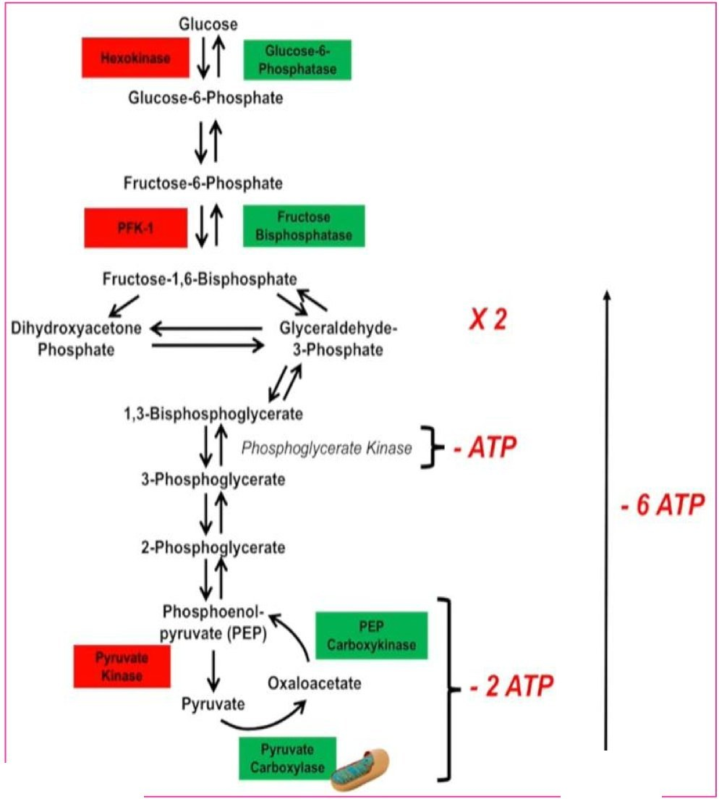
Energy cost p. 56
2 pyruvate → 1 glucose costs 2 × 3 = 6 ATP (pyruvate carboxylase, PEPCK, phosphoglycerate kinase, ×2) — versus 2 ATP gained in glycolysis: the price of irreversibility and reciprocal regulation.
The precursors one by one p. 57–61
| Precursor | Route |
|---|---|
| Lactate — Cori cycle | Anaerobic (hypoxic) muscle makes lactate → blood → liver → glucose → back to muscle. Glucose–lactate cycle. |
| Alanine — Felig cycle | Constant precursor in prolonged fasting; from muscle protein catabolism and glycolytic pyruvate. Muscle: pyruvate → alanine (ALT) → blood → liver: alanine → pyruvate (NH₂ → urea) → glucose. Glucose–alanine cycle. |
| Glycerol | Liver and kidneys have glycerol kinase: glycerol → glycerol-3-P, which either takes fatty acids (→ triglycerides) or is oxidised to DHAP by glycerol-3-P dehydrogenase → gluconeogenesis. |
| Glucogenic AAs | Carbon skeleton → pyruvate or one of 4 Krebs intermediates: α-ketoglutarate, succinyl-CoA, fumarate, oxaloacetate. It leaves the mitochondrion as malate → PEP. |
| Propionate (CH₃–CH₂–COOH) | From odd-chain fatty acids → succinyl-CoA → PEP. |
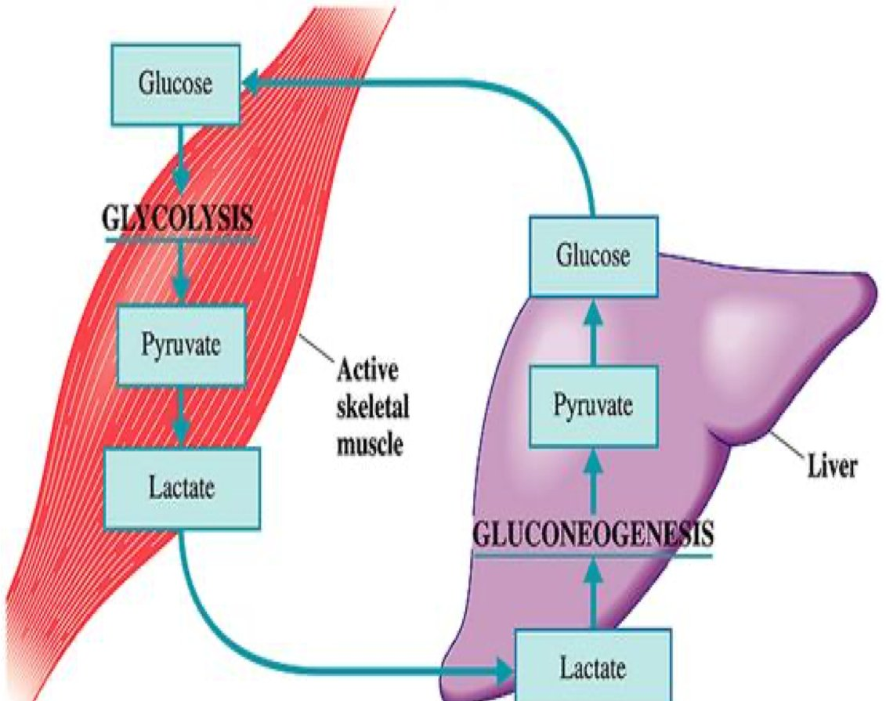
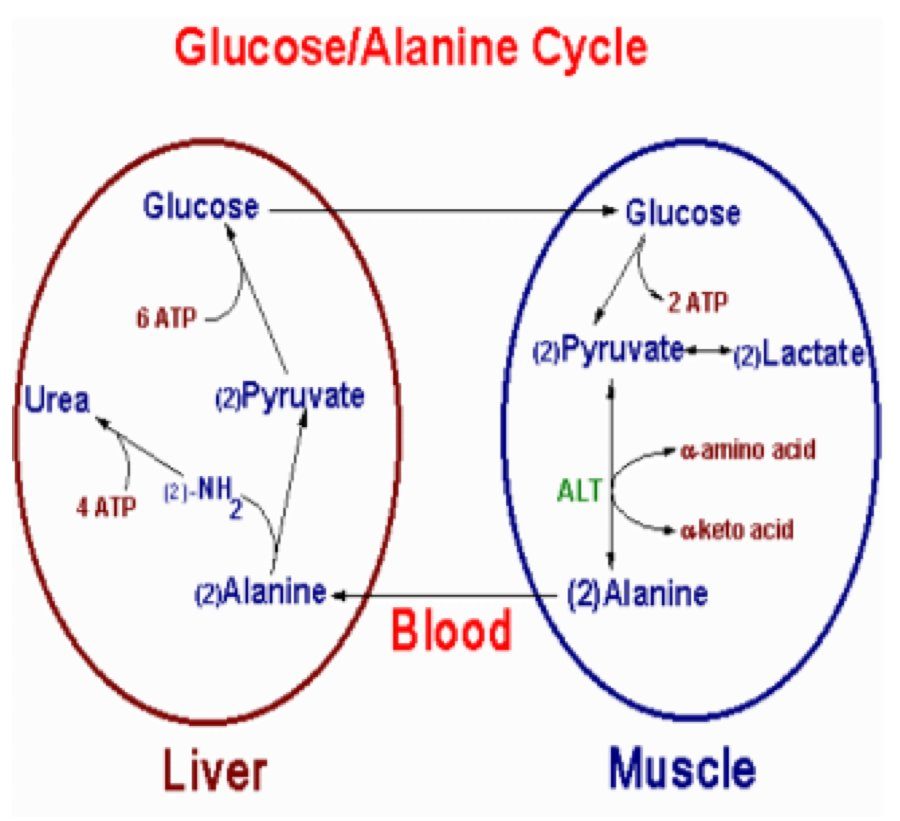
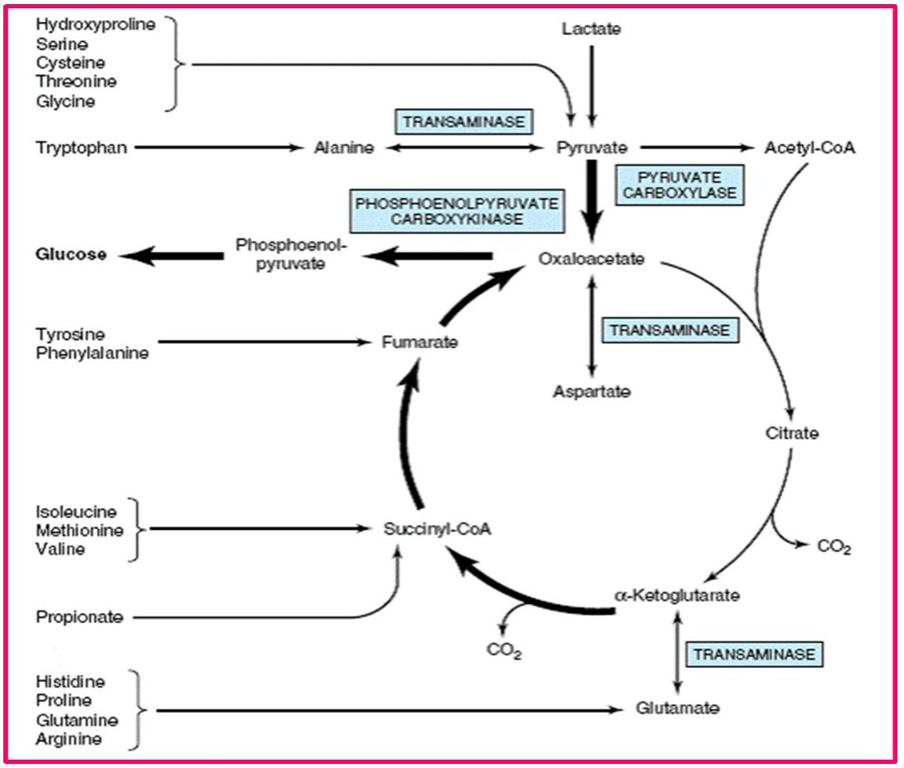
Regulation p. 63
- Fasting → blood glucose falls → glucagon → accelerates gluconeogenesis, inhibits glycolysis, induces PEPCK and F1,6-BPase.
- After a meal → insulin → slows gluconeogenesis, activates glycolysis.
| Step | Glycolysis enzyme | Gluconeogenesis enzyme |
|---|---|---|
| F6P ⇄ F1,6-bisP | PFK-1: + AMP, F-2,6-BP, insulin · − ATP, citrate, glucagon | F1,6-BPase: + citrate, glucagon · − AMP, F-2,6-BP |
| PEP ⇄ pyruvate | Pyruvate kinase: + insulin · − alanine, ATP, glucagon | Pyruvate carboxylase: + acetyl-CoA · − ADP. PEPCK: − ADP |
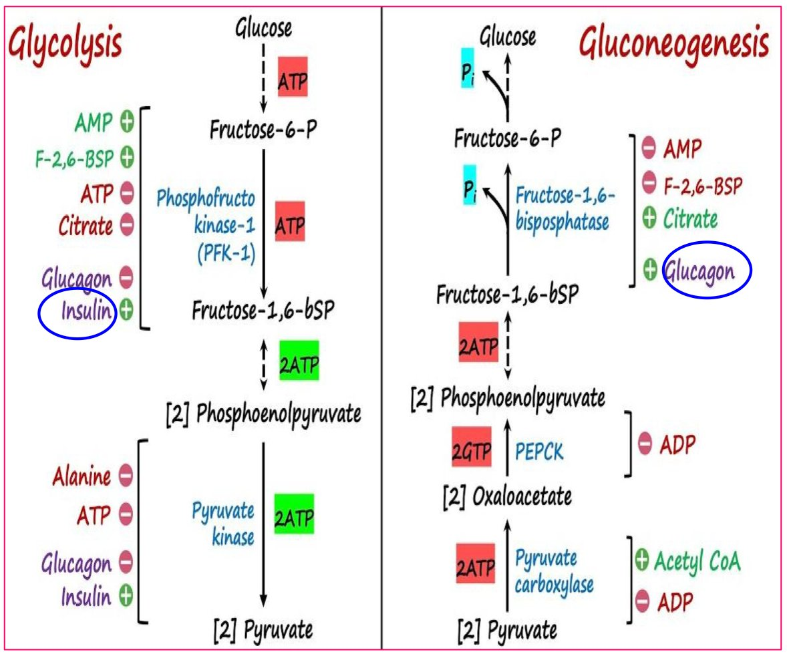
XII. Glycogen metabolism p. 65–73 2023-24 · 2025-26
Synthesis (glycogenesis) and breakdown (glycogenolysis) are regulated by the nutritional state (fed/fasting) and the energy status (ATP/AMP ratio). Glycogen metabolism concerns the intestine, liver and muscles.
| Liver | Muscle | |
|---|---|---|
| Store | ≈ 150 g (1/3 of body glycogen) | ≈ 300 g (2/3) |
| Fed / rest | Stores intestinal glucose (and glucose from gluconeogenesis) as glycogen | Stores glucose as glycogen at rest |
| Fasting / activity | Glycogenolysis → glucose exported to tissues; empty within 24 h | Glycogenolysis → glucose used on the spot during activity |
| Glucose-6-phosphatase | Yes → free glucose to the blood | No → G6P stays in the cell → glycolysis (lactate) |
| Use | "Public" (regulates blood glucose) | "Private" (local energy) |
| Breakdown hormone | Glucagon | Epinephrine |
Glycogenesis p. 67–69
- In the cytosol. Key enzyme glycogen synthase (α1→4 bonds) + branching enzyme (α1→6). Precursor glucose-6-P. Stimulated by insulin after meals.
- Needs ATP and UTP — two high-energy bonds per glucose.
Branching: once a chain is ≥ 11 residues long, the branching enzyme cuts an α(1→4) bond, takes a 7-residue fragment and attaches it to C6 of a glucose on the same or another chain → α(1→6) branch. Many branches = more soluble and many ends for fast addition/removal of glucose.
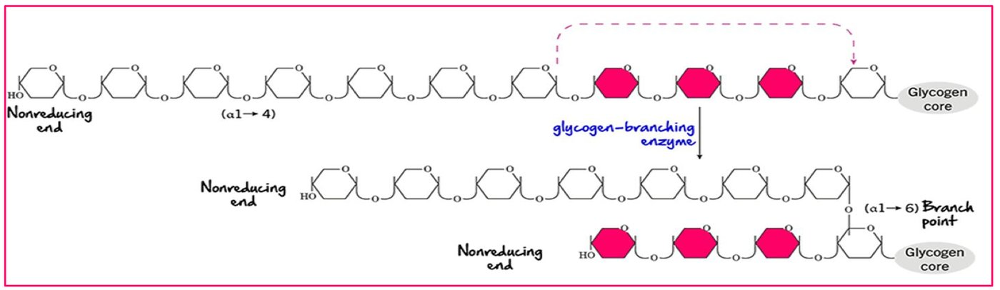
Glycogenolysis p. 67, 70–72
Glycogen phosphorylase breaks α(1→4) bonds; the debranching enzyme breaks α(1→6). Stimulated by glucagon (liver) and epinephrine (muscle) during fasting or exercise.
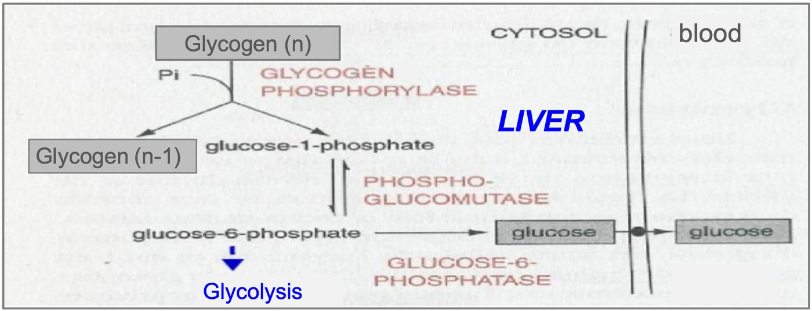
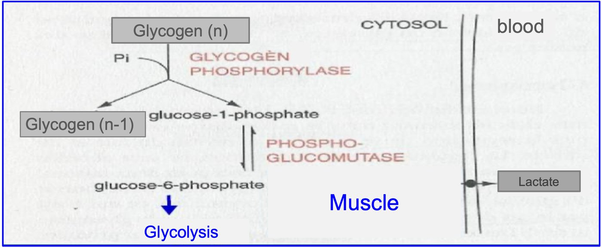
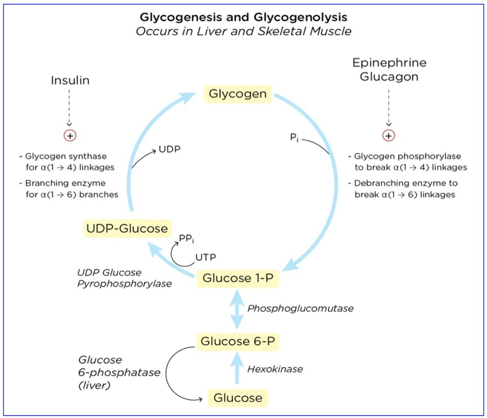
Glycogen storage diseases p. 73
| Type | Name | Deficient enzyme | Glycogen | Prevalence | Clinical |
|---|---|---|---|---|---|
| 0 | — | Glycogen synthase | None | Very rare | Hypoglycemia, ketosis |
| I | Von Gierke | Glucose-6-phosphatase | Normal | 1/50 000 | Severe hypoglycemia, big liver, lactic acidosis |
| II | Pompe | Lysosomal α1,4-glucosidase | Inclusion bodies with glycogen | 1/140 000 | Big heart, weakness, death |
| III | Cori | Debranching enzyme (α1,6-glucosidase) | Shorter outer branches | 1/100 000 | Mild hypoglycemia, big liver |
| IV | Anderson | Branching enzyme | Long chains, few branches | Very rare | Cirrhosis, hypoglycemia, death |
| V | McArdle | Muscle glycogen phosphorylase | Normal | 1/100 000 | Muscle cramps, weakness, teens |
| VI | Hers | Liver glycogen phosphorylase | Normal | 1/70 000 | Mild hypoglycemia, cirrhosis |
Exam traps
- "During glycolysis, ATP is only consumed" — false: 2 used (steps 1, 3), 4 made (steps 7, 10).
- "Phosphoglycerate kinase / pyruvate kinase consume ATP" — false: they make ATP. Only hexokinase and PFK consume it. 2025-26
- "PFK is shared by glycolysis and gluconeogenesis" — false: irreversible, bypassed by F1,6-BPase. Shared reversible enzymes: G6P isomerase, phosphoglycerate kinase, enolase… 2023-24
- "G6P isomerase / phosphoglycerate kinase are allosterically regulated" — false: hexokinase, PFK-1 (and pyruvate kinase). 2022-23
- "The main activator of PFK-1 is ATP / NADH / acetyl-CoA" — false: fructose-2,6-bisphosphate (ATP inhibits). 2024-25
- "PDH turns pyruvate into PEP / lactate / ethanol" — false: into acetyl-CoA. 2023-24
- "Under hypoxia glycolysis is inhibited" — false: chain and Krebs slow down, glycolysis continues, lactate rises, NAD⁺ regenerated. 2025-26
- "The Krebs cycle / the PPP regenerates NAD⁺ in anaerobiosis" — false: fermentation does. 2024-25
- "The Krebs cycle takes place in the cytoplasm" — false: mitochondrion. 2023-24
- "Glucokinase / PDH / carnitine acyltransferase are Krebs cycle enzymes" — false; malate dehydrogenase is. 2022-23
- "Succinyl-CoA → succinate makes NADH" — false: GTP. "Oxaloacetate → citrate / succinate → fumarate release CO₂" — false: CO₂ only at isocitrate DH and α-KG DH. 2024-25
- "Succinate dehydrogenation gives malate" — false: fumarate. 2023-24
- "Isocitrate dehydrogenase is activated by ATP and NADH" — false: they inhibit the cycle. 2025-26
- "Glucose synthesis is a main function of the Krebs cycle" — false per the key: it supplies intermediates (anabolic role), it doesn't make glucose. 2024-25
- "Krebs dysfunction → oxaloacetate accumulates / oxidative metabolism increases" — false: less NADH/FADH₂ and less ATP. 2024-25
- Yield of 1 pyruvate = 2 / 8 / 12 ATP — false: 15. F6P → lactate = 3, not 2. 2022-23 · 2023-24
- PPP "is exclusively hepatic" (ubiquitous), "makes ATP" or "NADH" (NADPH), "oxidative phase has two decarboxylations" (one). 3 years
- PPP products: arabinose-5-P is not one. Molecules that re-enter glycolysis: F6P and G3P — not F1,6-bisP, not xylulose-5-P. 2022-23 · 2024-25
- "Acetyl-CoA / malonyl-CoA are gluconeogenic precursors" — false. 2022-23 · 2024-25
- "Gluconeogenesis is exclusively cytosolic" (pyruvate carboxylase is mitochondrial) or "uses all the glycolysis enzymes" (3 bypasses) — false. 2025-26
- "G6P → glucose is done by hexokinase / glucokinase" — false: glucose-6-phosphatase (and it is not glucose → G6P). 2022-23 · 2023-24
- "Muscle lacks pyruvate carboxylase / PEPCK / F1,6-BPase" — the enzyme the key says is missing in muscle is glucose-6-phosphatase. 2024-25
- "Hexokinase / glucose-6-phosphatase are mitochondrial" — false; mitochondrial: succinate DH, PDH. 2023-24
- Cori cycle "transports glucose from muscle to liver" — false: it carries lactate muscle → liver. Felig cycle is about alanine, not lactate. 2024-25 · 2025-26
- Galactose "enters glycolysis via fructose-6-P" — false: via glucose-1-P → glucose-6-P. 2025-26